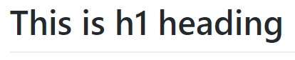
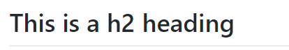

In this section, I’m going to create the project folder structure, add the first set of files for the project to these folders and then make them ready for a first commit to store it all in the local repository.
This is essentially the initial build of the project.
6.2.1
The .gitignore file
First thing, since it’s there—let’s change the .gitignore file.
Double click the .gitignore file in the left hand pane to open it in Brackets:
Leave the stuff that’s in there (The Brackets-Git extension added these things when it created the file. They don’t do any harm, but I don’t exactly know what they do either) and add the following (lines 7 onwards):
.gitignore
# https://git-scm.com/docs/gitignore
# https://help.github.com/articles/ignoring-files
# Example .gitignore files: https://github.com/github/gitignore
/bower_components/
/node_modules/
# Windows OS Files
Thumbs.db
Desktop.ini
# Mac OS Files
.DS_store
Save the file (file → save or ctrl+s or, if you have autosave, just click outside the Brackets window). The Git pane will recognise the change and will now show the file as untracked (it will no longer be in the staging area).
The little green line that shows next to the file in the left hand file tree of Brackets indicates that the file has been modified (doesn’t match the file in the repository). The green line will disappear when we commit the changes and everything matches.
6.2.2
Creating a folder structure
Now let’s add some folders and images to the project. Git handles folders quite well†1. The folder structure I’m looking for is shown in Figure 6.10.
Git will always keep files in the correct folder and different folders can hold files of the same name—it all works as you would expect. Git doesn’t however, track empty folders; empty folders are ignored by Git and won’t be in the repository. This leads to dummy files, placeholders (lieutenants if you will—in England it is pronounced “leff-tanant”, sorry Americans, you’ve been saying it wrong all these years) being used to make Git correctly store empty folders. There is an informal convention that these placeholder files are called .gitkeep. It is a convention I use
To create the first folder (11-resources) right click in the file tree (left pane of Brackets) and select new folder (Figure 6.11).
Call the new folder 11-resources (it will be highlighted in the left hand tree view).
Now right click the new 11-resources folder and create another new folder within it, call this one 01-css. Then repeat the process (right click 11-resources again) and create a second folder called 02-images. The final thing should look like this:
Although the new folders are showing in Brackets, they are not listed in the Git pane; this is because they are empty. We’ll fill them soon.
That’s the folder structure in place. Next thing is to add some files.
6.2.3
Adding images to the project
The first thing is the two images (logo.png and readme.png). They look like this:
Figure 6.13 logo.png
Figure 6.14 readme.png
These two files can be downloaded here a. Copy and paste them into the 02-images folder (the easiest way is with Windows Explorer).
Brackets should automatically recognise that two new files are present and update the left hand file tree accordingly. If it doesn’t (sometimes it is slow with networked drives) right click the left sidebar and select refresh file tree or just hit f5.
Either way it should look like this (click the little arrow heads at the side of the folder names in the left hand file tree to expand them), Figure 6.15:
We can also see that the two files have been detected by Git and are correctly flagged as untracked.
6.2.4
The README.md file
I haven’t really discussed the README.md file. I mentioned it briefly in section 5.4 and made some changes by way of example. The README.md file was introduced with GitHub. GitHub likes readme files. It likes them to such an extent that if one lives in the root folder it will be displayed on the home screen for that repository.
Now I know that this is a local repository and isn’t on GitHub; but I’m still going to create a README.md file. I think they’re a good idea and we will be putting this project into a remote GitHub repository in a subsequent section (section 8).
The README.md file is a markdown file (ironically this is actually a version of a mark-up language) hence the .md extension. It is widely used for README files. It allows the text in the file to be formatted by using simple character combinations:
MARKDOWN
RESULT
# This is an h1 heading

## This is a h2 heading

###### This is a h6 heading
*Text in italics*
**Text in bold**
1. Item 1
2. Item 2
3. Item 3
* Item 3a
* Item 3b
Table 6.1 Basic markdown
GitHub uses a slightly more advanced version of markdown, this is called Git Flavoured Markdown and allows images, code fragments and some directly encoded HTML.
appendix c gives a summary and some examples of both markdown and Git flavoured markdown.
The README.md should contain certain specific things:
A title
An Introduction (what the project is for)
A Table of Content (TOC)
Instructions for use
Installation instruction (if required)
Links to other documentation (if not all contained here)
List of contributors
Licence (unless listed in another document)
Let’s create the readme file. It needs to be in the root of the project folder.
In Brackets, right click the bottom of the file tree and click new file and then rename the new file as README.md†2 .
†2
The README.md file is by convention written with README in capitals (I think to make it noticeable). There is no actual requirement for this; GitHub will quite happily use readme.md instead. If both are present, it will display README.md in preference to readme.md.
Double click the new file and add the following code to it:
README.md
# A PracticalSeries Publication
<p align="center">
<img src="11-resources/02-images/readme.png">
</p>
The **Practical Series of publications** is a website resource for web developers and engineers. It contains a number of online publications designed to help and explain how to build a website, how to use version control and how to write engineering software for control systems.
This particular repository is designed as an example project to demonstrate how to build a Git and GitHub repository using the Brackets-Git extension for the Brackets text editor.
The full set of PracticalSeries publications is available at [practicalseries.com](http://practicalseries.com "Practical Series Website").
## How to use this repository
This repository is a worked example demonstrating how to build a version control project using Git and GitHub from within the Brackets text editor.
This repository is intended to be used with the accompanying documentation [practicalseries Git and GitHub](http://practicalseries.com/0021-git-vcs/index.html "Practical Series - Git and GitHub").
## Contributors
This repository was constructed by [Michael Gledhill](https://github.com/practicalseries-lab "Michael Gledhill").
## Licence
This is simply a demonstration repository, the contents are free to use by anyone who wishes to do so.
First index.html. Create a new file in the root directory (same place as .gitignore and README.md). Call it index.html and add the following code:
index.html
<html lang="en"> <!-- Declare language -->
<head> <!-- Start of head section -->
<meta charset="utf-8"> <!-- Use Unicode character set -->
<link rel="stylesheet" type="text/css" href="11-resources/01-css/style.css">
<title>PracticalSeries: Git Lab</title>
</head>
<body>
<h1>A Practical Series Website</h1>
<figure class="cover-fig">
<img src="11-resources/02-images/logo.png" alt="cover logo">
</figure>
<h3>A note by the author</h3>
<p>This is my second Practical Series publication—this one happened by accident too. The first publication is all about building a website, you can see it here. This publication came about because I wanted some sort of version control mechanism for the first publication.</p>
<p>There are lots of different version control systems (VCS) out there; some are free, some are commercial applications just google it. If you do, you will find that Git and GitHub show up again and again.</p>
</body>
</html>
The style.css file needs to be created in the 11-resources\01-css\ folder. If the folder isn’t visible, expand the folder by clicking the small arrow next to the folder name in the left hand file tree view. Once you can see the 01-css folder right click it and select new file. Rename the new file style.css. Add the following code:
Save the file and again confirm that it is recognised by Git. Git should now have six untracked files Table 6.2 and Figure 6.19; all files are displayed in the Brackets file tree:


{kind=link}
{kind=link}
{kind=link}
{kind=link}
{kind=link}
{kind=link}
{kind=link}
{kind=link}
{kind=link}
{kind=link}